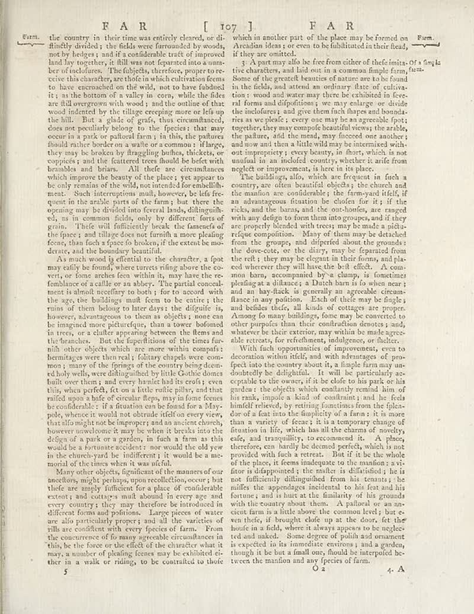

page-0217-7dc36e3a55f8.jpg

Page ID: britannica:309f765b1ecc83e0a7f7762e44b4a927a7555443:train:217
Running head: FAR [ 107] FAR
Image SHA-256: 7dc36e3a55f8250a0b4a7854c3ac1ca73e4bfb1ae457129c889057610a8084e7

(untitled) [?]
Form. the country in their time was entirely cleared, or di- finly divided ; the fields were forwarded by woods, not by helges , and if a confidential trait of improved land by together, or fill them not reported into a number ber of incolures. The subjects, therefore, proper to re- ctories this character, are those which culminated to have accrued on the wild, not to have fishbed it ; as the bottom of a valley in corn, while the fades are fil unwagons with winded, and an one of the woods just overing more or flat up the hill." But a glade of graf, thus circumflanced, does not generally belong to the species that may occur at a point or distant from ; in this, the pattern should richer border on a waite or a common: Harges, they may be broken by flagging yellow, thickets, or copious; and the features trees found the bets with branables and brains. All field are circumstances which improve the beauty of the place : yet appear to be only remains of the wild, not intended for cannellibh- ment. Such interruptions multi, however, is fat quests in the ankle parts of the fary, but there the opening may be divided into several lands, diflungulh- ed, as in common fields, only by different form of grain. Their will difficulty break the fanement of the space : and tillage does not furnish a more pleading forms, than fach a space to broken, if the extent be mo- derary, and the boundary beautiful. As much wood ij efential to the charter, a foot may raily be found, where tourists may go above the ice veri, or tone reaches low within it, may have the re- femblance of a callle or an abby. The partial conceal much should deceifney to buy! I sent accord with the age, the building mullk fees to be entire i the ruins of them belong to litter days; the digdle is, however, advantageous to them as objects; none can be imagined more petturique, than oyster bolomed in units, or a chalic appearing between the flora and the branches. But the figurefictions of the times far nib other objects which are mean within compats’s bermatages over their very; foliage chapped were com- monos : many of the Springs of the coming beyond hedoly wells, were diltinguished by little Gothic doma hall over there , and every hinder had its croti's even this, when puffs/Aft can no like roller pilts, and that raised upon a bafe of circular fleeps, may in home forms be considerable - in a frustrate en to found the a Abys- pole, whence it would not change indicate if well on every view that allo might not be improper; and an ancient church, however unwellance it may be when it breaks into the defense of a walk or a garden in fach a farm as this would be a four-tone sections: nor would the old year in the church park be indifferent; it would be a me- morial of the times when it was inferior. Many other objects, figured on the manner of monitors, might perhaps upon recollection, occur; but thefe are simply futificient for a place of conforable excetant and cotates shall abound in ever age and every country, they may therefore be introduced in different forms and politicians. Large pieces of water are also particularly project and all the varieties of rills and conflicts about every person of arm. From the concurrence of fo many agreeable circumlances in this, be the force over the effect of the character what it may, a number of placing forces may be exhibited ei- ther in a walk or riding, to be contratted to thode which in another part of the place may be formed on Arcaidan idea ; or even to be fullbitted in their head, if they are omitted. 3 A partire ploile fee free from either of these limits Of a single tive characters, and laid out in a common limple farm, "am. Some of the greatest beaches that nature we to be found In the fields, and attend an ordinary date of cultiva- tion : wood and water may there be exhibited in feve- alifornia and dispositions; see may enlarge our divide the incolores and give them fresh dropers and boundaries ries as we please ; everyone may be an agreeable foot; together, they may comprise beautiful towns in arables, the picture, and then needs, you proceed one another; and now and then a little wild may be intermed with- ont important may become in there, which is not manful in an included country, whether it safe from neglect or improvers, I here in its place. On the buildings, all, which are frequent in fach a country are often beautiful objects; the church and the manñon are considerable; the farm-owl itself, if an advantageous function the chosen for it; if the ricks, and the baras, and the out-hoofous, are ranged with any edges to form that into groups, and if they are properly bonded with trees may be made such- refque composition. Many of them may be detached from the groups, and digested about the grounds; the device, or the dairy; may be separated from the roll; they may be elegant in their forms, and placed ad never they fall line the bell effects. A com- mons bars, accompanied by a clump, is functions plening at a distance, a Dutch barn is to when near ; and an bay side, is generally an agreeable circuma- lance in any position. Each of their way led ringls and besides thefs, all kinds of cottages are proper. Among do many buildings, some may be converted to other purpose than their construction donantes ; and, whatever the interaction, may work be made egne- able extracts, or refreshments, indigence, or choice. With fach opportunities of improvement, even to formation within field, and with advantages of pro- fect into the country about, in a female farm may doubtledly be delightful. It will be particularly ac- modities to the owner, if in be dude to his park or in garder; the objects which ultimately took him of his rank, impede a kind of confrontant; and he feels himelf relieved, by resting frontants from the flipla- fore of East into the majority of a farm; it is more than a variety of fence; it is a temporary change of function in life, which has the theories of novelty, eife, and tranquility, to reconocuted it. A places, therefore, can hardly be deemed perfed, which is not provided with facts or retreat. But it is be the whole of the place, it forms inadequate to the manñon: a vi- floor is disappointed; the milieu is disdisified, he is inaufilius diffungulhge, he is tennis; the milffes the appendages incidental to his feat and his structure; and it must at the Ministry of his grounds with the country about them. A payload is an an- cient farm in a little down the common level; but e- ern thefe, if brought clop as the door, let the hole of a field, where it always appears to be neglected and naked. Some degree of polish and ornament is expected in his immediate extremism, and a gender, though it do not but a final cure, found the interpoted be- tween the manñion and any facies of farm.
Matched article: The Refreshments (Wikipedia, revision 1185608460, re-rank score -5.47265625) · comparison
OCR issues
No OCR issues recorded for this page.